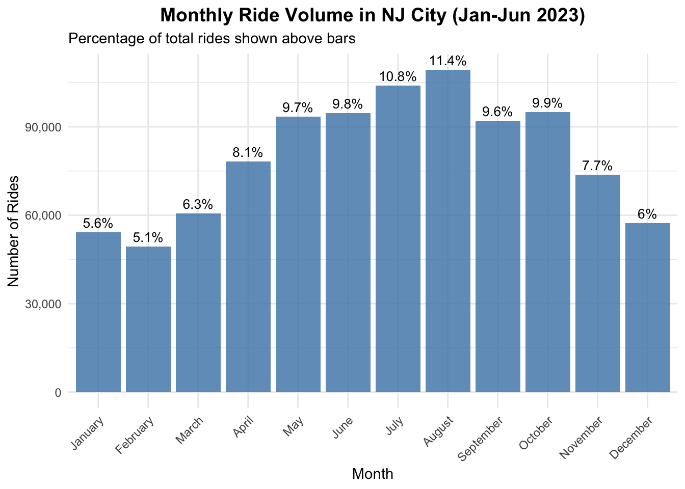
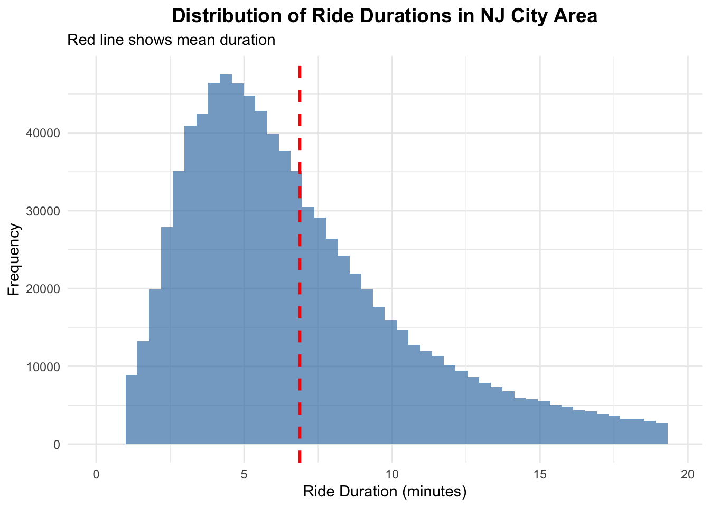
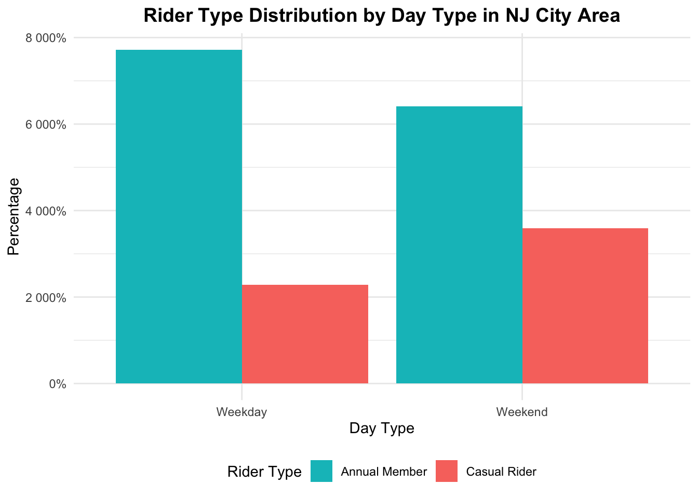
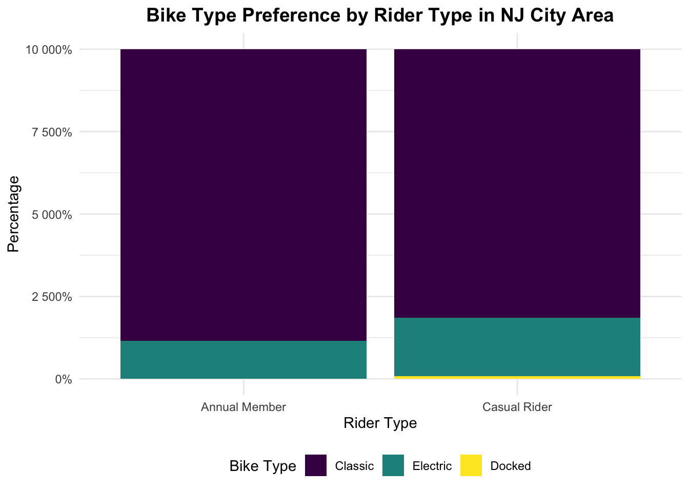

Exploratory Data Analysis
View full EDA steps on GitHub
Analysis 1: Monthly and seasonal patterns in New Jersey City
| start_month | n_rides | percentage | avg_duration |
|---|---|---|---|
| January | 54205 | 5.6 | 10.4 |
| February | 49315 | 5.1 | 9.2 |
| March | 60674 | 6.3 | 9.6 |
| April | 78280 | 8.1 | 11.6 |
| May | 93363 | 9.7 | 12.9 |
| June | 94671 | 9.8 | 12.6 |
| July | 104012 | 10.8 | 12.6 |
| August | 109316 | 11.4 | 11.6 |
| September | 91979 | 9.6 | 11.1 |
| October | 94921 | 9.9 | 10.9 |
| November | 73811 | 7.7 | 9.3 |
| December | 57249 | 6.0 | 8.8 |

The NJ Citi Bike 2023 data shows ridership peaking in July and August with over 100,000 rides each, while winter months have the lowest numbers. Average ride durations are longest in late spring and summer, around 12-13 minutes, and shortest in winter. Overall, bike usage rises in warmer months and falls as temperatures drop.
The monthly ridership in the NJ city shows that annual members consistently take more rides than casual riders throughout the year. Both groups see an increase in rides during the warmer months, peaking in July and August, before declining in the colder months. Annual members have a sharper rise and higher overall ridership compared to casual riders.
| season | n_rides | avg_duration | total_hours | percentage |
|---|---|---|---|---|
| Winter | 160769 | 9.5 | 25376.7 | 16.7 |
| Spring | 232317 | 11.6 | 44844.9 | 24.2 |
| Summer | 307999 | 12.2 | 62824.5 | 32.0 |
| Fall | 260711 | 10.5 | 45751.2 | 27.1 |

The NJ City sees the highest ride volume in summer, accounting for 32% of rides with an average duration of 12.2 minutes. The fall season follows with 27.1% of rides, then spring at 24.2%, which both having longer average durations than winter. Winter has the lowest ride count at 16.7%, with the shortest average ride duration of 9.5 minutes. Overall, ride frequency and duration peak in warmer seasons.
Analysis 2: Temporal patterns in NJ City
| start_hour | day_type | n_rides | avg_duration |
|---|---|---|---|
| 18 | Weekday | 77476 | 10.4 |
| 17 | Weekday | 75508 | 10.3 |
| 8 | Weekday | 56707 | 8.6 |
| 13 | Weekend | 19430 | 14.9 |
| 15 | Weekend | 19413 | 16.2 |
| 12 | Weekend | 19215 | 13.7 |

Weekday ridership displays distinct peaks, with a rise in ridership in the morning between 8–9 AM and a rise in ridership in the late afternoon between 4-6 PM. In contrast, weekend rides follow a smoother, flatter curve. Overall, weekday rides are substantially higher, reflecting typical workday travel behavior, while weekend activity is steadier and more leisure oriented.
| day_of_week | day_type | n_rides | avg_duration | percentage |
|---|---|---|---|---|
| Sun | Weekend | 121742 | 14.7 | 12.7 |
| Mon | Weekday | 130039 | 10.5 | 13.5 |
| Tue | Weekday | 142311 | 10.1 | 14.8 |
| Wed | Weekday | 148602 | 9.8 | 15.5 |
| Thu | Weekday | 147393 | 9.9 | 15.3 |
| Fri | Weekday | 142610 | 10.5 | 14.8 |
| Sat | Weekend | 129099 | 13.4 | 13.4 |

Ride volumes steadily rise from Monday and peak midweek on Wednesday and Thursday before decreasing slightly on Friday. Weekends show lower total rides but longer ride duration, suggesting possibly more leisure based trips compared to weekday commuting patterns.

The heatmap highlights strong weekday commuting patterns, with ride activity concentrated in the morning and especially in the late afternoon and early evening. Weekends show a more even distribution across midday hours, with fewer early morning rides and a less concentrated in the afternoon.
Analysis 3: Ride duration analysis in NJ city
| n_rides | mean_duration | median_duration | sd_duration | q25 | q75 |
|---|---|---|---|---|---|
| 872183 | 6.9 | 6 | 3.9 | 4 | 8.8 |

Ride durations are short overall, clustering around 4–8 minutes, with a median of 6 minutes and a long tail of less frequent longer trips. The distribution is right-skewed, indicating that while most rides are brief, a smaller share extend well beyond the mean duration of about 7 minutes.
| member_type | n_rides | mean_duration | median_duration | sd_duration |
|---|---|---|---|---|
| Annual Member | 666521 | 6.5 | 5.6 | 3.7 |
| Casual Rider | 205662 | 8.3 | 7.4 | 4.0 |

Annual members tend to take shorter, more consistent rides, while casual riders have noticeably longer trip durations on average.
| time_of_day | mean_duration | n_rides |
|---|---|---|
| Morning | 6.4 | 252192 |
| Afternoon | 7.2 | 246779 |
| Evening | 7.0 | 278330 |
| Night | 7.1 | 94882 |

Ride durations vary slightly by time of day. Mornings are the shortest on average, while afternoons, evenings, and nights are slightly longer and have more variable trips. The overall pattern suggests that rides later in the day tend to be more leisurely or flexible compared to morning travel.
Analysis 4: User type comparisons in NJ city
| member_type | n | percentage |
|---|---|---|
| Annual Member | 709452 | 73.8 |
| Casual Rider | 252344 | 26.2 |

Annual members make up the majority while casual riders account for a smaller share of bike usage.
| day_type | member_type | n_rides | avg_duration | total | percentage |
|---|---|---|---|---|---|
| Weekday | Annual Member | 548686 | 8.5 | 710955 | 77.2 |
| Weekday | Casual Rider | 162269 | 15.8 | 710955 | 22.8 |
| Weekend | Annual Member | 160766 | 10.2 | 250841 | 64.1 |
| Weekend | Casual Rider | 90075 | 20.7 | 250841 | 35.9 |


The data shows that annual members make up the majority of weekday riding, accounting for over three-quarters of trips, while casual riders make up a larger share on weekends. By time of day, annual members remain the majority in every time period, specifically their share is the highest in the morning when commuting is most common. However, annual member rides decline slightly later in the day as casual usage increases. Overall, the patterns reinforce that members drive weekday, commute oriented demand, while casual riders contribute more heavily during leisure times and weekends.
| member_type | bike_type | n_rides | total | percentage |
|---|---|---|---|---|
| Annual Member | Classic | 627042 | 709452 | 88.4 |
| Annual Member | Electric | 82410 | 709452 | 11.6 |
| Casual Rider | Classic | 205515 | 252344 | 81.4 |
| Casual Rider | Electric | 44741 | 252344 | 17.7 |
| Casual Rider | Docked | 2088 | 252344 | 0.8 |

The graph compares the distribution of bike types (classic, electric, and docked—used) by annual members compared to casual riders. Both groups mostly use classic bikes, but members use electric bikes slightly less often than casual riders. Casual riders also show a small amount of docked-bike usage, while members almost never use them.